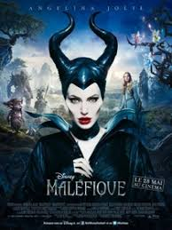
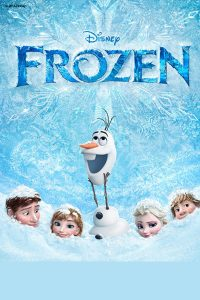
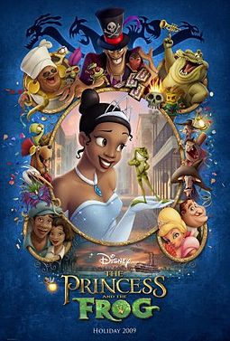
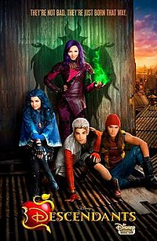
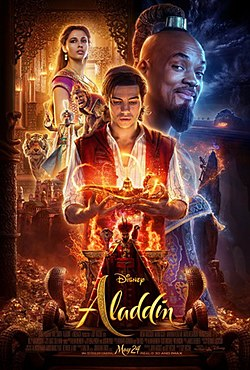

Filmes da Disney
Malévola

Malévola, uma jovem de coração puro, vive em um pacífico reino na floresta, até o dia em que um exército invasor ameaça a harmonia da região, fazendo com que ela se torne a mais feroz protetora do reino. No entanto, uma terrível traição a transforma em uma mulher amarga e vingativa. Como consequência, amaldiçoa Aurora, sua filha recém-nascida. Mas, aos poucos, Malévola percebe que a criança é a chave para a paz no reino e para sua verdadeira felicidade também.
Malévola TrailerData de lançamento: 29 de maio de 2014 (Brasil) Direção: Robert Stromberg Bilheteria: 758,5 milhões USD
Moana

A história se inicia quando Mauí, um semideus, rouba o coração de Te Fiti, a deusa que criou a vida, espalhando assim, escuridão e destruição por todo o mundo. Mas a personagem não consegue ficar com o coração da deusa, uma vez que Te Ka, um monstro, o surpreende fazendo com que o precioso coração caia no mar e fique perdido por muitos séculos. Mil anos depois, Moana é uma jovem que nasce e cresce numa aldeia onde seu pai é chefe. Desde muito nova se sente atraída pelo mar, e com isso, surge nela um grande desejo de navegar além dos recifes e descobrir o que a esperava por lá. Mas seu pai insiste em proibi-la de se aproximar do mar, alegando ser muito perigoso e que todos que foram jamais voltaram. Através de sua avó, Moana descobre que o passado de seu povo era viajar pelo mar em busca de novas terras, mas que tudo se acabara depois do sumiço do coração de Te Fiti.
Moana TrailerData de lançamento: 5 de janeiro de 2017 (Brasil) Direção: Ron Clements, John Musker Bilheteria: 643,3 milhões USD
Frozen

Acompanhada por um vendedor de gelo, a jovem e destemida princesa Anna parte em uma jornada por perigosas montanhas de gelo na esperança de encontrar sua irmã, a rainha Elsa, e acabar com a terrível maldição de inverno eterno, que está provocando o congelamento do reino.
Frozen TrailerData de lançamento: 3 de janeiro de 2014 (Brasil) Direção: Jennifer Lee, Chris Buck Canção original: Let It Go Bilheteria: 1,276 bilhão USD
A princesa e o sapo

A trabalhadora e ambiciosa, Tiana sonha em um dia abrir o seu próprio restaurante em Nova Orleans. Seus planos tomam um rumo diferente quando ela conhece o príncipe Naveen, o qual tinha se tornado um sapo pelo maldoso Dr. Facilier. Porém, o príncipe, que agora é um sapo, tem esperanças de ser um humano novamente se Tiana beijá-lo.
A princesa e o sapo TrailerData de lançamento: 11 de dezembro de 2009 (Brasil) Direção: John Musker, Ron Clements
Descendentes

No reino de Auradon, Ben, o bondoso filho adolescente do Rei Fera e da Rainha Bela, assume o trono. Ele permite que descendentes dos vilões entrem em Auradon, pela primeira vez, para frequentarem a escola, ao lado dos filhos adolescentes da Fada Madrinha, Cinderela, Bela Adormecida e Mulan. À medida que os filhos do mal conhecem os filhos do bem, suas histórias começam a incorporar temas encorajadores relacionados à autoconfiança, beleza interior, responsabilidade e justiça.
Descendentes TrailerData de lançamento: 16 de agosto de 2015 (Brasil) Direção: Kenny Ortega Séries de filmes: Descendants Roteiro: Sara Parriott, Josann McGibbon
Aladdin

Um jovem humilde descobre uma lâmpada mágica, com um gênio que pode lhe conceder desejos. Agora o rapaz quer conquistar a moça por quem se apaixonou, mas o que ele não sabe é que a jovem é uma princesa que está prestes a se noivar. Agora, com a ajuda do gênio, ele tenta se passar por um príncipe para conquistar o amor da moça e a confiança de seu pai.
Aladdin TrailerData de lançamento: 23 de maio de 2019 (Brasil) Direção: Guy Ritchie Bilheteria: 1,026 bilhão USD
2019